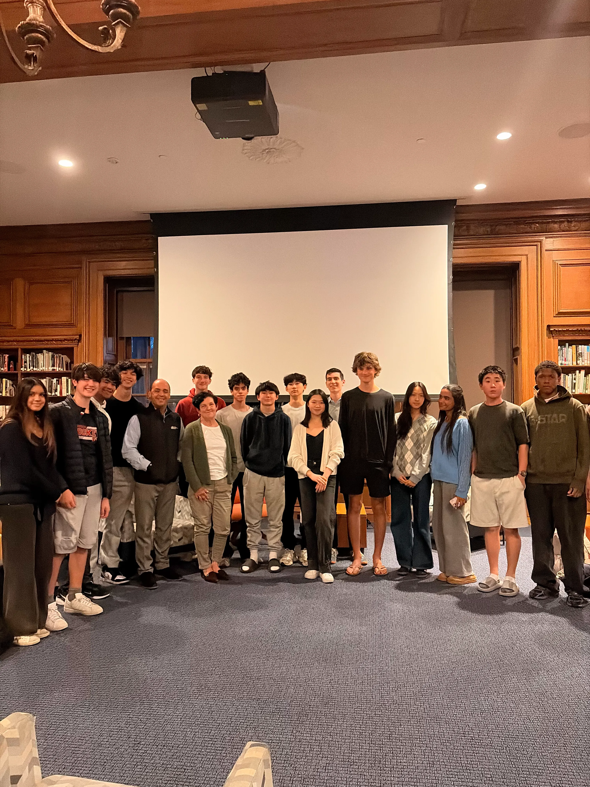
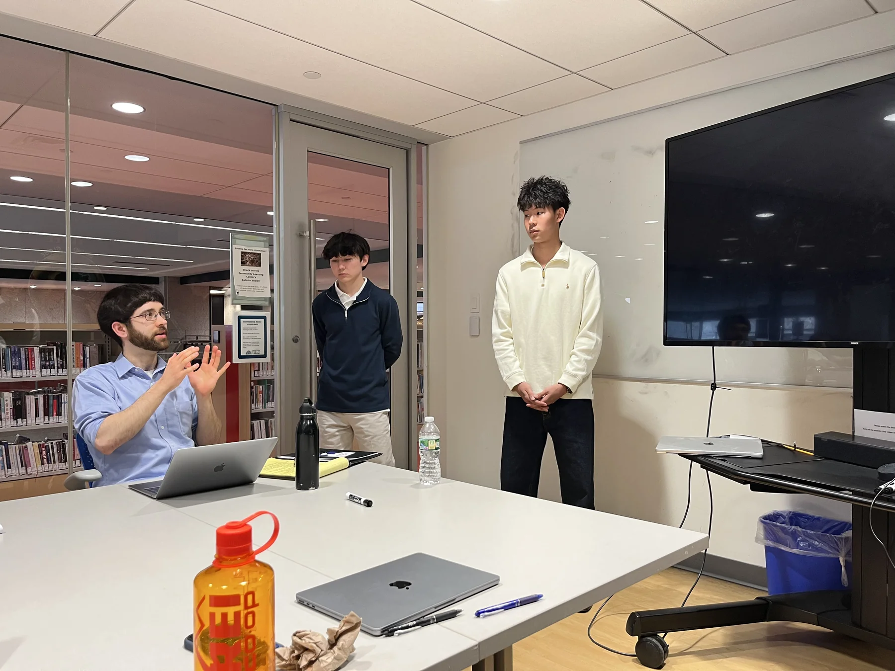

2025–2026
This year's sessions
-
Oct 182025Guest speaker
Andrew Mikula, Pioneer Institute
Mikula discussed his work in housing economics and zoning policy, with a focus on Greater Boston. He also walked students through the structure of a policy brief and the difference between academic economics writing and policy writing for a general audience. The session ran virtually, 6–7 pm.
-
Oct 292025Guest speaker
Grant Farrington, Boston Municipal Research Bureau
Farrington presented on fiscal policy and the Boston municipal budget. His work complements Mikula's housing focus with a closer look at tax policy and government finance. The session was held in person. Students used the Q&A to workshop early policy brief topics.
-
Dec 42025Guest feedback session
Policy brief presentations with Andrew Mikula
Students presented their fall-term policy briefs to Mikula in a feedback session. Briefs covered a range of local and regional economic topics. The strongest work was flagged for possible publication on the AES website or continuation into the spring journal.
-
Apr 232026Guest speaker
Julieann Thurlow and Jose Cruz, Reading Cooperative Bank
Thurlow is President and CEO of Reading Cooperative Bank. Cruz is SVP and Commercial team lead, and has led the bank's redevelopment lending in Lawrence. Together they will discuss community banking, housing finance, and the local impact of MBTA Communities zoning in person.

AES withJulieann Thurlow and Jose Cruz, April 2026. -
Apr 262026Policy brief presentation
Andrew Mikula, Pioneer Institute
AES members travelled to the Pioneer Institute in Boston to present their spring policy briefs to Andrew Mikula, who hosted the club's fall speaker session in October. Mikula provided detailed feedback on each brief.

Policy brief presentations with Andrew Mikula, April 2026. -
Apr 302026Policy brief presentation
Senator Barry Finegold, Massachusetts State Senate
Members will present their spring policy briefs to State Senator Finegold, who represents the Second Essex and Middlesex district, which includes Andover. The session will be held online.
Student presentations
Fall 2025 topics
Each fall, board members prepare and lead a session on a core economics topic. This year's sessions ran alongside the speaker track and the policy brief research track.
Konnor
Scarcity and prices
Price signals, rationing, and the economics of shortage. Includes a discussion of price gouging.
Bella & Pia
Opportunity cost
The real cost of every choice. Why economists think in terms of what you give up, not what you spend.
Andrew
Cost-benefit analysis
How to evaluate a policy or decision when the costs and benefits are uncertain or distributed unevenly.
Anna
Game theory
Strategic decision-making, Nash equilibria, and why rational actors sometimes produce bad collective outcomes.
Kachi
Intellectual property
Patents, copyrights, and the economic argument for and against IP protection. What happens at the margins.
Henry
Trade and globalization
Comparative advantage, protectionism, and the distributional effects of open trade. Includes a discussion of current tariff policy.